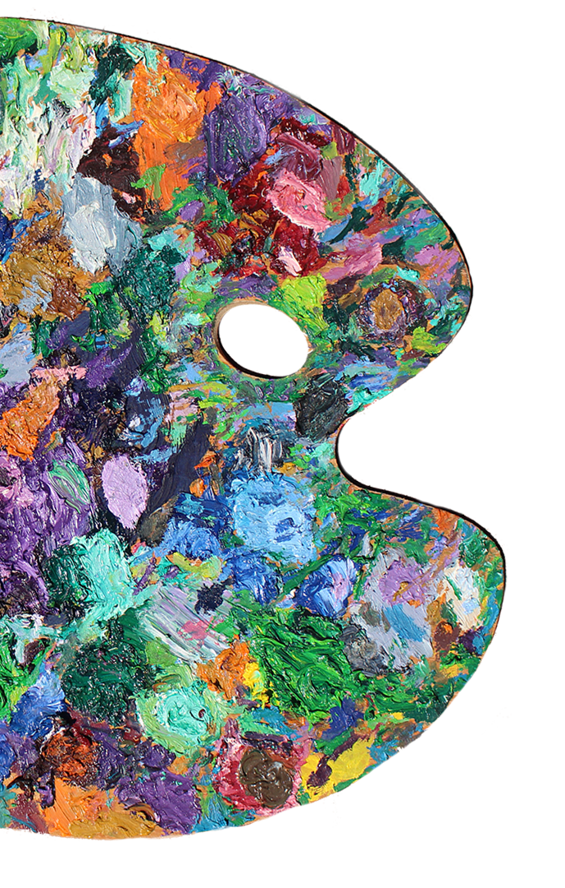

 He has been called “a modern-day Vincent San Fransisgogh,” (by his nephew Steven) for his whimsical views of the City by the Sea, and called “perhaps the greatest living post-post-post-post-post-impressionist I’ve ever met!” (by his very own mother). An extraordinarily guarded and reclusive painter, very little is known about the actual details of his life. So little, in fact, that he remembers very few of those details himself. Still, from what can be pieced together from a tattered old scrapbook, a few postcards and a candid interview with the artist himself, the following seems reasonably clear:
He began painting in 2006 while a caregiver for his mother during the last years of her life, completed 8 paintings during that period, then took one year off. To date he has completed 19 more paintings, most of those since moving to Santa Cruz in 2009. Most of his work is on display at Sones Cellars Winery (Pictured below), located on the westside of Santa Cruz. Little else is known with any certainty about this most unusual, mysterious and temperamental, contemporary artist.
You can contact the artist at bendavisartwork@gmail.com but to be clear, he's probably not interested.